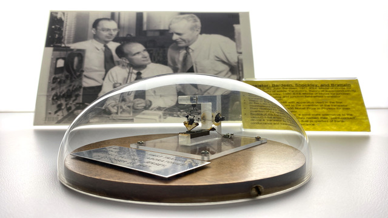
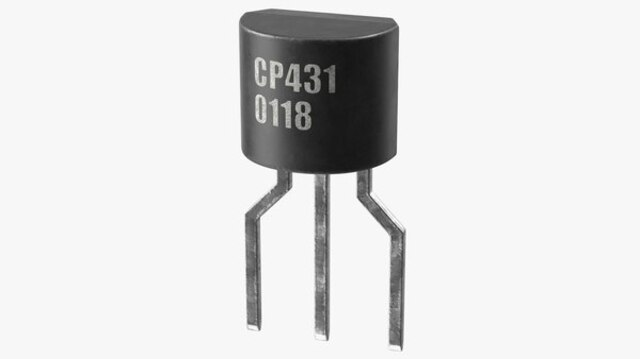
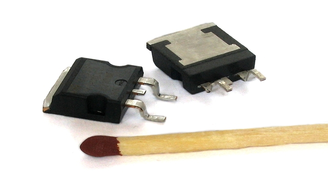

Cada vez menores e mais numerosos dentro dos circuitos integrados instalados em computadores, smartphones e outros equipamentos de uso diário, os transistores são precursores de uma revolução tecnológica. Projetada em 1947 para melhorar a vida útil dos computadores valvulados da época, a invenção chega aos 76 anos em escalas nanométricas, provendo possibilidades incontáveis de aplicabilidade.
O primeiro transistor era composto de germânio (Ge), material semicondutor que depois foi substituído pelo silício (Si), . A inovação era capaz de substituir as válvulas na maioria das aplicações, tanto em circuitos analógicos (amplificadores, rádios, televisores) quanto nos digitais (computadores), o que, logo de início, já significou a redução do tamanho dos equipamentos e maior eficiência energética. Isso levou à evolução constante da tecnologia eletrônica, possibilitando que aparelhos realizassem tarefas cada vez mais complexas.
Os transistores têm duas funções básicas: amplificar a corrente elétrica ou barrar a sua passagem. Quando na função de amplificador, os transistores são alimentados por uma baixa corrente elétrica de entrada, amplificando-a e, assim, produzindo uma corrente elétrica de saída com maior intensidade. Os transistores também podem funcionar como interruptores, ligando ou desligando a corrente elétrica em um circuito: da mesma forma como eles são capazes de amplificar a corrente elétrica, eles também são capazes de atenuá-la, e esse processo pode ocorrer em uma grande velocidade (os transistores atuais fazem isso bilhões de vezes por segundo).
O protótipo desenvolvido pelos pesquisadores do laboratório norte-americano Bell Labs John Bardeen, William Shockley e Walter Brattain era chamado de transistor “contato pontual”. “Era muito instável e foi substituído pelo transistor bipolar de junção (NPN) em 1950”, explica Martino.
Em 1960 surgiu o primeiro transistor “mosfet”, tornando-se o elemento básico para a construção de circuitos integrados, os chamados chips, considerado pelo professor a alma de todos os circuitos eletrônicos modernos, com dimensões micrométricas e nanométricas.
Transístor Contato Pontual: |
Transístor Bipolar de Junção: |
Transístor Mosfet: |
|  |  |  |